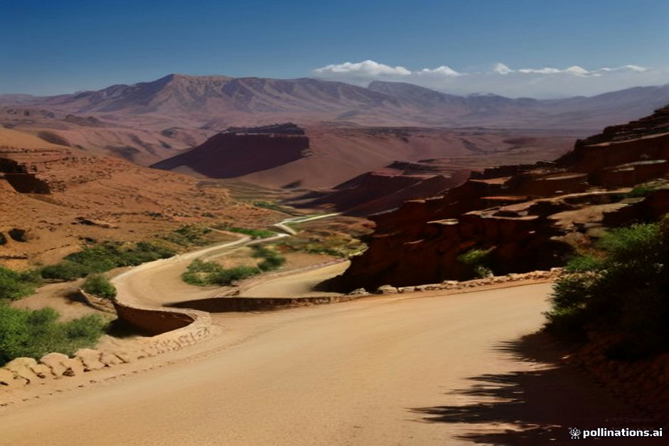

Most travelers want to see both the Sahara and the Atlantic, but the distance between Merzouga and Essaouira is significant. It is roughly 10 to 12 hours of pure driving time, which turns into a grueling 14-hour day once you factor in mountain passes and road conditions. If you try to do this in a single day, you will spend your entire holiday inside a vehicle.
My advice is simple: do not treat this as a transit day. Instead, view it as a second half of your tour that requires a deliberate stopover. By breaking the journey, you avoid the exhaustion that ruins the experience of the coast once you finally arrive.
The Ouarzazate Buffer
The most logical place to break your journey is Ouarzazate or the Skoura Oasis. By stopping here, you split the drive into two manageable segments. You spend your first day driving from Merzouga through the Dades Valley, allowing you to arrive in Ouarzazate by late afternoon. This gives you time to visit the film studios or the Taourirt Kasbah without rushing.
The following morning, you have a much shorter drive ahead of you toward the coast. You will still have a long day, but you will arrive in Essaouira feeling human rather than rattled by constant road travel.
- Leave Merzouga early to beat the heat.
- Spend the night in Ouarzazate or Skoura.
- Use the second day to navigate the Tizi n'Tichka pass while fresh.
Avoiding the Marrakesh Bottleneck
Many travelers make the mistake of driving straight through Marrakesh on their way to the coast. The traffic in and around Marrakesh can add two hours of frustration to your trip. If you are coming from the desert, look for routes that bypass the city center if your driver or rental car allows.
If you must pass through, schedule your arrival for mid-day to avoid peak rush hour, though traffic in the city is rarely predictable. A better strategy is to plan your logistics so you are not trying to navigate city traffic at sunset when visibility drops and local commuting increases.
Road Conditions and Expectations
The road from the desert to the coast shifts from desert plains to winding mountain roads and finally to the coastal highway. These roads require different driving styles. The Tizi n'Tichka pass is the most demanding section, featuring sharp hairpins and heavy truck traffic.
Do not underestimate the fatigue caused by these roads. Even if you are a confident driver, the constant focus required to navigate the mountains can be draining. If you are hiring a driver, ensure they are experienced with the full route to the coast, not just the desert circuit.
Why the Coast is Worth the Effort
Essaouira offers a completely different climate and pace compared to the Sahara. The cooling Atlantic breeze is a welcome change after the heat of the dunes. However, if you arrive exhausted from a 12-hour drive, you will likely spend your first day in the city sleeping rather than exploring the ramparts or the harbor.
Make the transition a part of the adventure. Stopping at a roadside cooperative or taking an extra hour for a proper lunch in a village along the way makes the journey feel like a tour rather than a chore.
| Route Segment | Estimated Time | Road Type |
|---|---|---|
| Merzouga to Dades | 4 hours | Desert/Valley |
| Dades to Ouarzazate | 2.5 hours | Valley/Plateau |
| Ouarzazate to Marrakesh | 4.5 hours | Mountain Pass |
| Marrakesh to Essaouira | 3 hours | Highway/Coastal |

Illustration, not a photograph — for the real thing, you'll have to stand on the ridge yourself.
Quick answers
A few follow-up questions travelers ask about this.
Is there a direct bus from Merzouga to Essaouira?
No. You will almost certainly need to change buses in Ouarzazate or Marrakesh, which makes the journey significantly longer and more complicated than a private transfer.
Can I do this trip in one day if I hire a private driver?
Technically yes, but I strongly advise against it. It is an extremely long day that leaves little room for enjoying the scenery or stopping for photos.
Should I visit Marrakesh on the way?
If you have the time, yes. Adding a night in Marrakesh breaks the drive perfectly and allows you to experience the city before heading to the coast.
Planning your own route?
Tell us your dates and what matters to you — we'll answer with a straight recommendation, not a brochure.
Send an inquiry See the itineraries